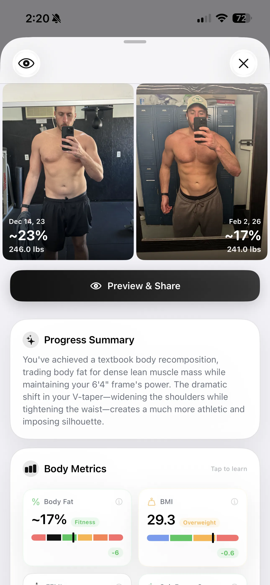

Understanding Your AI Physique Score: What 1–100 Really Means
Your GainFrame Score rates your physique on a 100-point scale. Here's exactly what goes into the calculation — and how to use it to optimize your training.

Your AI physique score is the headline number on every GainFrame report. If you've run a Deep Dive analysis on a progress photo, you've seen it: that prominent 1 to 100 number sitting at the top. But the AI physique score isn't just a gimmick or an arbitrary grade — it's a dynamic, data-driven calculation constructed from exactly what the AI sees in your photo.
When we built the scoring engine, we knew a "one-size-fits-all" number wouldn't work. A 60 for someone bulking means something very different than a 60 for someone cutting. Here is a look under the hood at how your score is calculated, what the ranges mean, and how you can use this feedback to accelerate your progress.
How the AI physique score is calculated
A single selfie holds incredible amounts of data about your body composition. The AI vision model behind GainFrame analyzes your physique across four distinct dimensions:
- Visible Body Fat: We go beyond simple scale weight. The model looks for key indicators like abdominal and oblique visibility, subcutaneous fat around the midsection (love handles), facial definition, and vascularity in the arms and shoulders.
- Muscle Development: The engine individually assesses your six major visible muscle groups: shoulders, chest, arms, back, core, and legs. It looks for fullness, separation, and striations.
- Proportions & Symmetry: A great physique isn't just about size; it's about balance. The AI evaluates how your muscle groups relate to each other — like whether your arms are growing proportionally to your shoulders, or if your upper chest is lagging behind your mid-chest.
- Goal Alignment: This is the most critical factor. Your score is graded against your specific fitness goal. We use three entirely different rubrics depending on whether you've told GainFrame you want to Lose Weight, Gain Muscle, or achieve Body Recomp.
What the AI physique score ranges mean
GainFrame doesn't inflate scores to make you feel good. It uses the full 1-100 spectrum. Most everyday gym-goers who are training consistently will land somewhere between 35 and 75. Here is the breakdown of the tiers:
0–30: Starting
What it means: Depending on your goal, you either have high body fat with no visible muscle definition, or you're very thin with minimal muscle mass. This is the baseline — where everyone starts before serious training kicks in.
31–50: Building
What it means: The work is starting to show. You have some shape visible, but significant fat covering might still be present, or you've built a base but lack muscle fullness. At this stage, changes in progress photos become very noticeable month-to-month.
51–70: Solid
What it means: You look like you lift. Definition is emerging, your midsection is reducing, and you have noticeable size in your major muscle groups. You are successfully executing a body recomp.
71–85: Impressive
What it means: You are lean, with highly visible muscle definition, a reduced waist, and good proportions. You have noticeable mass and are carrying it well. A score in this tier puts you in the top percentage of your local gym.
86–100: Elite
What it means: Exceptional mass, full and thick muscles, clear abs and obliques with minimal subcutaneous fat, and striking proportions. This is peak physical condition.
Turn your score into an action plan
A number is useless if it doesn't tell you what to do next. That's why the GainFrame Score is just the headline — the real value is in the breakdown.
Because the AI evaluates each of your muscle groups individually, it rates them as Strong, Developing, or Needs Work. If your score is stuck at 55, the report might reveal that while your chest and arms are "Strong," your back and core are "Needs Work."
GainFrame then translates these lagging body parts into specific, high-priority recommendations tailored exactly to you. You won't get generic advice like "work out more." You'll get highly targeted directives like:
- "To further accentuate your new shoulder width, focus on wide-grip pull-ups to broaden the V-taper."
- "Now that your body fat is lower, add hanging leg raises to pop the lower abs."
By attacking the muscle groups dragging your score down, your overall physique balance improves — and your AI physique score rises with it. For a deeper understanding of how the AI reads your body, see how AI body composition analysis works.
Download GainFrame today
Be the first to try GainFrame. New features, training tips, and launch updates — straight to your inbox.